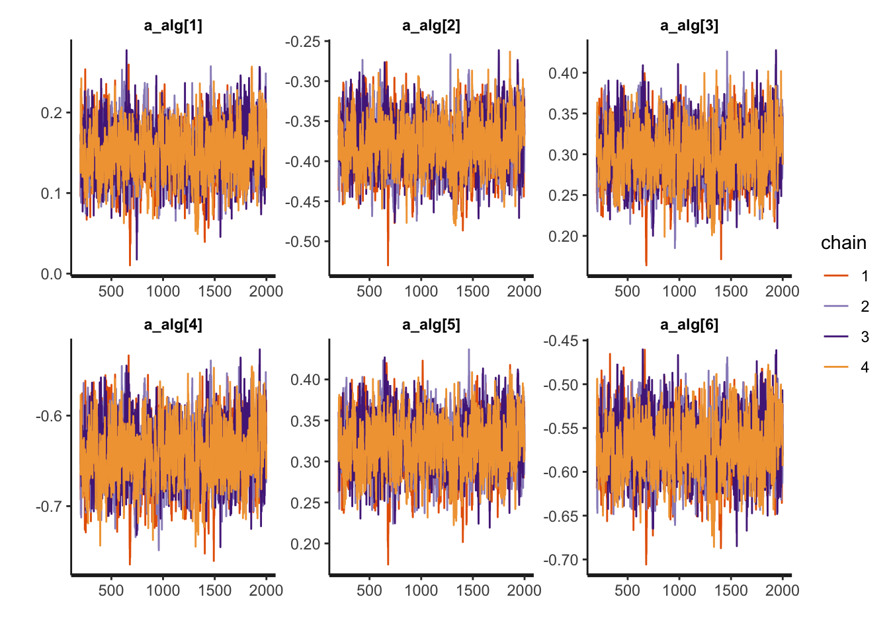
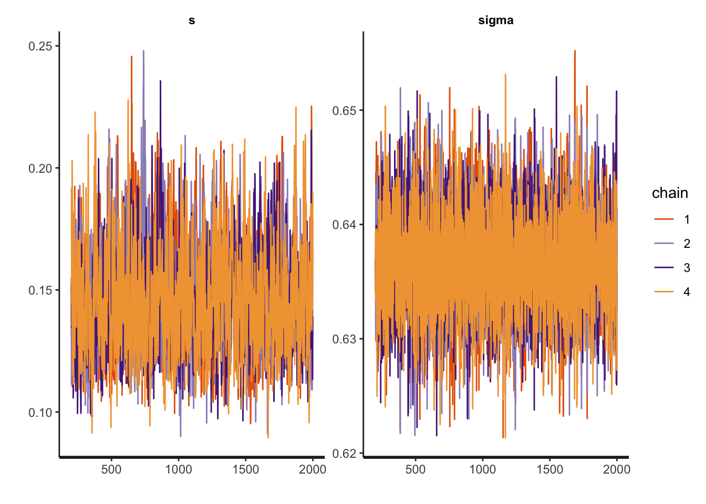

Chapter 3 Relative improvement
Our next, model deals with relative improvement of the algorithms over a baseline in noiseless functions. This model is based on a normal linear regression.
- RQ2 What is the expected improvement of these algorithms against the Random Search in noiseless benchmark functions in terms of approaching a global minima based in the Euclidean distance to the location of the closest global minima?
3.1 RQ2 Data preparation
We start importing the dataset
dataset <- readr::read_csv('./data/statscomp.csv')Let’s select only the columns that interests us, in this case the Euclidean distance
d<- dataset %>%
dplyr::select(Algorithm, CostFunction, SD, Budget=MaxFevalPerDimensions, simNumber, EuclideanDistance, OptimizationSuccessful) %>%
dplyr::filter(OptimizationSuccessful & SD==0) %>%
dplyr::select(-SD, -OptimizationSuccessful) Let’s first make this a wide data set based on the algorithm to make it easier to compute the relative improvement over the Random Search. We are also dropping the RandomSearch2 since there is no noise in the benchmark functions
There are several ways that can be used to compute a relative improvement (and they will affect the result). The way we are using is to compare against the mean of distance of the 10 samples of the Random Search in each cost function for a specific budget. The way we are comparing is we divide the distance of each algorithm by the average distance of the random search. If this ratio is greater than 1 then random search is better, if smaller than 1 then the algorithm is better
relativeImprovement <- function(x, rs){
#x is the column
#rs is the random search column
ri <- (rs-x)/rs
ri<-ifelse(ri < -1, -1, ri)
ri<-ifelse(ri > 1, 1, ri)
return(ri)
}
d_wide <- d %>%
tidyr::pivot_wider(
names_from = Algorithm,
values_from = EuclideanDistance) %>%
dplyr::select(-RandomSearch2) %>%
dplyr::group_by(CostFunction, Budget) %>%
dplyr::mutate(avgRandomSearch=mean(RandomSearch1)) %>%
dplyr::ungroup() %>%
dplyr::mutate_at(c("NelderMead", "PSO", "SimulatedAnnealing","CuckooSearch", "DifferentialEvolution", "CMAES"),
~relativeImprovement(.x,rs=avgRandomSearch))After we compute our metric we drop the Random Search column and we pivot_longer again to make the inference
d_final <- d_wide %>%
dplyr::select(-RandomSearch1, -avgRandomSearch) %>%
tidyr::pivot_longer(
cols = c("NelderMead", "PSO", "SimulatedAnnealing","CuckooSearch", "DifferentialEvolution", "CMAES"),
names_to = "Algorithm",
values_to = "y") %>%
dplyr::select(-simNumber) %>%
dplyr::mutate(AlgorithmID=create_index(Algorithm),
CostFunctionID=create_index(CostFunction)) %>%
dplyr::select(Algorithm, AlgorithmID, CostFunction, CostFunctionID, Budget, y)
#checking if there is any na -> stan does not accept that
find.na <- d_final %>%
dplyr::filter(is.na(y))
bm<-get_index_names_as_array(d_final$CostFunction)
saveRDS(bm, './data/relativeimprovement_bm.RDS')
algorithms <- get_index_names_as_array(d_final$Algorithm)
saveRDS(algorithms, './data/relativeimprovement_algorithms.RDS')Now we have our final dataset to use with Stan. Lets preview a sample of the data set
kable(dplyr::sample_n(d_final,size=10), "html",booktabs=T, format.args = list(scientific = FALSE), digits = 3) %>%
kable_styling(bootstrap_options = c("striped", "hover", "condensed")) %>%
kableExtra::scroll_box(width = "100%")| Algorithm | AlgorithmID | CostFunction | CostFunctionID | Budget | y |
|---|---|---|---|---|---|
| CuckooSearch | 2 | DiscusN2 | 6 | 10000 | -1.000 |
| NelderMead | 4 | Schwefel2d20N2 | 16 | 100 | -1.000 |
| NelderMead | 4 | Trefethen | 25 | 1000 | -1.000 |
| PSO | 5 | XinSheYang2N2 | 29 | 100 | 0.962 |
| SimulatedAnnealing | 6 | RosenbrockRotatedN6 | 14 | 10000 | -1.000 |
| SimulatedAnnealing | 6 | XinSheYang2N2 | 29 | 100 | -1.000 |
| DifferentialEvolution | 3 | ExponentialN2 | 7 | 20 | -0.372 |
| PSO | 5 | RosenbrockRotatedN6 | 14 | 100000 | 0.906 |
| CuckooSearch | 2 | Tripod | 27 | 100000 | -1.000 |
| SimulatedAnnealing | 6 | LunacekBiRastriginN6 | 9 | 20 | -0.529 |
3.2 RQ2 Stan model
The Stan model is specified in the file: './stanmodels/relativeimprovement.stan'. Note that at the end of the model we commented the generated quantities. This block generates the predictive posterior y_rep and the log likelihood, log_lik. These values are useful in diagnosing and validating the model but the end file is extremely large (~1Gb for 2000 iterations) and make many of the following calculations slow. If the reader wants to see these values is just to uncomment and run the stan model again
print_stan_code('./stanmodels/relativeimprovement.stan')// Relative improvement model
// Author: David Issa Mattos
// Date: 17 June 2020
//
//
data {
int <lower=1> N_total; // Sample size
real y[N_total]; // relative improvement variable
//To model each algorithm independently
int <lower=1> N_algorithm; // Number of algorithms
int algorithm_id[N_total]; //vector that has the id of each algorithm
//To model the influence of each benchmark
int <lower=1> N_bm;
int bm_id[N_total];
}
parameters {
real <lower=0> sigma;//std for the normal
//Fixed effect
real a_alg[N_algorithm];//the mean effect given by the algorithms
// //Random effect. The effect of the benchmarks
real a_bm_norm[N_bm];//the mean effect given by the base class type
real<lower=0> s;//std for the random effects
}
model {
real mu[N_total];
sigma ~ exponential(1);
//Fixed effect
a_alg ~ normal(0,1);
// //Random effects
s ~ exponential(0.1);
a_bm_norm ~ normal(0,1);
for (i in 1:N_total)
{
mu[i] = a_alg[algorithm_id[i]] + a_bm_norm[bm_id[i]]*s;
}
y ~ normal(mu, sigma);
}
//Uncoment this part to get the posterior predictives and the log likelihood
//But note that it takes a lot of space in the final model
// generated quantities{
// vector [N_total] y_rep;
// vector[N_total] log_lik;
// for(i in 1:N_total){
// real mu;
// mu = a_alg[algorithm_id[i]] + a_bm_norm[bm_id[i]]*s;
// y_rep[i]= normal_rng(mu, sigma);
// log_lik[i] = normal_lpdf(y[i] | mu, sigma );
// }
// }Let’s compile and start sampling with the Stan function. In the data folder you can find the specific data used to fit the model after all transformations "./data/relativeimprovement-data.RDS"
standata <- list(
N_total=nrow(d_final),
y = d_final$y,
N_algorithm = length(algorithms),
algorithm_id = d_final$AlgorithmID,
N_bm = length(bm),
bm_id = d_final$CostFunctionID)
saveRDS(standata, file = "./data/relativeimprovement-data.RDS")For computation time sake we are not running this chunk every time we compile this document. From now on we will load from the saved Stan fit object. However, when we change our model or the data we can just run this chunk separately
standata<-readRDS("./data/relativeimprovement-data.RDS")
relativeimprovement.fit <- stan(file = './stanmodels/relativeimprovement.stan',
data=standata,
chains = 4,
warmup = 200,
iter = 2000)
saveRDS(relativeimprovement.fit, file = "./data/relativeimprovement-fit.RDS")3.3 RQ2 Diagnosis
a_alg <- c("a_alg[1]",
"a_alg[2]",
"a_alg[3]",
"a_alg[4]",
"a_alg[5]",
"a_alg[6]")
rstan::traceplot(relativeimprovement.fit, pars=a_alg)
rstan::traceplot(relativeimprovement.fit, pars=c('s','sigma'))
Another diagnosis is to look at the Rhat. If Rhat is greater than 1.05 it indicates a divergence in the chains (they did not mix well). The table below shows a summary of the sampling.
kable(summary(relativeimprovement.fit)$summary) %>%
kable_styling(bootstrap_options = c('striped',"hover", "condensed" )) %>%
kableExtra::scroll_box(width = "100%")| mean | se_mean | sd | 2.5% | 25% | 50% | 75% | 97.5% | n_eff | Rhat | |
|---|---|---|---|---|---|---|---|---|---|---|
| sigma | 0.6366100 | 0.0000428 | 0.0046356 | 0.6279357 | 0.6334462 | 0.6365653 | 0.6396818 | 0.6457408 | 11737.9589 | 0.9998479 |
| a_alg[1] | 0.1504431 | 0.0010669 | 0.0315679 | 0.0890274 | 0.1289946 | 0.1503498 | 0.1710892 | 0.2130964 | 875.5536 | 1.0020870 |
| a_alg[2] | -0.3782017 | 0.0010608 | 0.0312129 | -0.4384189 | -0.3990024 | -0.3785456 | -0.3569890 | -0.3180648 | 865.8437 | 1.0022883 |
| a_alg[3] | 0.3016706 | 0.0010386 | 0.0318547 | 0.2394596 | 0.2803897 | 0.3016050 | 0.3229036 | 0.3637406 | 940.7541 | 1.0017231 |
| a_alg[4] | -0.6416444 | 0.0010506 | 0.0316451 | -0.7035318 | -0.6628445 | -0.6415439 | -0.6206061 | -0.5804023 | 907.2309 | 1.0016704 |
| a_alg[5] | 0.3197972 | 0.0010933 | 0.0316366 | 0.2567743 | 0.2984940 | 0.3203481 | 0.3410073 | 0.3804611 | 837.4044 | 1.0015712 |
| a_alg[6] | -0.5712294 | 0.0010744 | 0.0318686 | -0.6329672 | -0.5926750 | -0.5713187 | -0.5504153 | -0.5080394 | 879.8954 | 1.0023406 |
| a_bm_norm[1] | -0.5324372 | 0.0072268 | 0.3110141 | -1.1446108 | -0.7392397 | -0.5307194 | -0.3175314 | 0.0609326 | 1852.0990 | 1.0003273 |
| a_bm_norm[2] | -2.1565188 | 0.0112839 | 0.4114065 | -3.0139485 | -2.4225173 | -2.1345244 | -1.8665108 | -1.4204484 | 1329.3022 | 1.0009460 |
| a_bm_norm[3] | 0.8557922 | 0.0073074 | 0.3220833 | 0.2453745 | 0.6347019 | 0.8489550 | 1.0702666 | 1.5008964 | 1942.7468 | 1.0012470 |
| a_bm_norm[4] | 0.1502905 | 0.0066763 | 0.3072522 | -0.4326836 | -0.0593567 | 0.1441169 | 0.3552582 | 0.7645143 | 2117.9527 | 1.0002763 |
| a_bm_norm[5] | -1.1326181 | 0.0085411 | 0.3420580 | -1.8346108 | -1.3509023 | -1.1248777 | -0.8996870 | -0.4881811 | 1603.8856 | 1.0003229 |
| a_bm_norm[6] | 0.8558640 | 0.0072952 | 0.3236103 | 0.2370131 | 0.6320748 | 0.8505455 | 1.0739499 | 1.4909068 | 1967.7769 | 1.0011601 |
| a_bm_norm[7] | -0.0413356 | 0.0071274 | 0.3039265 | -0.6351911 | -0.2450705 | -0.0405354 | 0.1630906 | 0.5561242 | 1818.3338 | 1.0004550 |
| a_bm_norm[8] | 1.1243779 | 0.0076636 | 0.3352797 | 0.4993539 | 0.8898000 | 1.1171430 | 1.3455862 | 1.8050221 | 1914.0470 | 1.0014555 |
| a_bm_norm[9] | 0.4787389 | 0.0070748 | 0.3140171 | -0.1179473 | 0.2695584 | 0.4710521 | 0.6866548 | 1.1086989 | 1970.0285 | 1.0005173 |
| a_bm_norm[10] | 0.3282321 | 0.0071282 | 0.3096721 | -0.2771011 | 0.1231111 | 0.3274623 | 0.5365737 | 0.9280143 | 1887.3190 | 1.0010798 |
| a_bm_norm[11] | 0.8736090 | 0.0080123 | 0.3259996 | 0.2503156 | 0.6479220 | 0.8653393 | 1.0896311 | 1.5221133 | 1655.4586 | 1.0009389 |
| a_bm_norm[12] | 0.6707052 | 0.0072055 | 0.3167687 | 0.0749724 | 0.4535551 | 0.6644335 | 0.8764376 | 1.3154337 | 1932.6408 | 1.0013575 |
| a_bm_norm[13] | -1.7386842 | 0.0098444 | 0.3781142 | -2.5231052 | -1.9816060 | -1.7269537 | -1.4711017 | -1.0392991 | 1475.2544 | 1.0006415 |
| a_bm_norm[14] | 0.8892515 | 0.0074731 | 0.3241643 | 0.2790440 | 0.6662089 | 0.8769090 | 1.1051927 | 1.5387143 | 1881.5965 | 1.0009292 |
| a_bm_norm[15] | -1.0726736 | 0.0084882 | 0.3314618 | -1.7423574 | -1.2824677 | -1.0642625 | -0.8519186 | -0.4486825 | 1524.8706 | 1.0007155 |
| a_bm_norm[16] | 0.1074685 | 0.0070940 | 0.3051650 | -0.4907630 | -0.0949131 | 0.1019742 | 0.3119469 | 0.7071876 | 1850.4962 | 1.0010560 |
| a_bm_norm[17] | 0.8224704 | 0.0072394 | 0.3262720 | 0.2010029 | 0.5977758 | 0.8164466 | 1.0357533 | 1.4659379 | 2031.1884 | 1.0005378 |
| a_bm_norm[18] | 0.7667547 | 0.0075036 | 0.3201146 | 0.1585328 | 0.5478409 | 0.7561602 | 0.9779430 | 1.3995464 | 1819.9792 | 1.0015047 |
| a_bm_norm[19] | -0.5677922 | 0.0072741 | 0.3134924 | -1.2106486 | -0.7726446 | -0.5606116 | -0.3540789 | 0.0217070 | 1857.3671 | 1.0002155 |
| a_bm_norm[20] | 0.0879460 | 0.0068471 | 0.3058517 | -0.5149716 | -0.1169447 | 0.0908125 | 0.2943910 | 0.6794939 | 1995.2988 | 1.0007190 |
| a_bm_norm[21] | -0.5632527 | 0.0073789 | 0.3167070 | -1.2067040 | -0.7682321 | -0.5597471 | -0.3499427 | 0.0516084 | 1842.1702 | 1.0005945 |
| a_bm_norm[22] | 1.1724562 | 0.0077659 | 0.3403050 | 0.5270203 | 0.9331018 | 1.1642364 | 1.4008483 | 1.8550582 | 1920.2270 | 1.0014713 |
| a_bm_norm[23] | -1.2555759 | 0.0087782 | 0.3440404 | -1.9785188 | -1.4762408 | -1.2379681 | -1.0227795 | -0.6103550 | 1536.0428 | 1.0003350 |
| a_bm_norm[24] | 0.2698611 | 0.0068884 | 0.3067795 | -0.3418640 | 0.0682229 | 0.2669627 | 0.4770308 | 0.8782026 | 1983.4420 | 1.0004909 |
| a_bm_norm[25] | -0.7249007 | 0.0075140 | 0.3210720 | -1.3799455 | -0.9392957 | -0.7174527 | -0.5078526 | -0.1048101 | 1825.8476 | 1.0005200 |
| a_bm_norm[26] | 1.4013859 | 0.0081970 | 0.3558229 | 0.7488342 | 1.1587726 | 1.3878845 | 1.6302152 | 2.1367271 | 1884.3446 | 1.0012795 |
| a_bm_norm[27] | -1.0722893 | 0.0083682 | 0.3332402 | -1.7443855 | -1.2929783 | -1.0652907 | -0.8431567 | -0.4500125 | 1585.8196 | 1.0003164 |
| a_bm_norm[28] | -0.3734760 | 0.0069790 | 0.3079066 | -1.0152636 | -0.5677904 | -0.3693947 | -0.1721274 | 0.2091721 | 1946.4702 | 1.0004438 |
| a_bm_norm[29] | -0.5220881 | 0.0076369 | 0.3137439 | -1.1577763 | -0.7261937 | -0.5122625 | -0.3076597 | 0.0602610 | 1687.7736 | 1.0007462 |
| a_bm_norm[30] | 1.0909753 | 0.0079913 | 0.3376618 | 0.4643900 | 0.8590997 | 1.0825904 | 1.3123522 | 1.7709307 | 1785.3890 | 1.0013195 |
| s | 0.1462747 | 0.0006600 | 0.0215428 | 0.1102501 | 0.1309906 | 0.1443111 | 0.1596464 | 0.1940269 | 1065.5445 | 1.0017016 |
| lp__ | -453.8280738 | 0.1664049 | 5.9138935 | -466.3807087 | -457.4939235 | -453.3995258 | -449.6758589 | -443.5918651 | 1263.0328 | 1.0020458 |
3.4 RQ2 Results and Plots
First lets get the HPDI of every parameter.
Then we restrict to the algorithms, them to the slopes, then to the
hpdi <- get_HPDI_from_stanfit(relativeimprovement.fit)
hpdi_algorithm <- hpdi %>%
dplyr::filter(str_detect(Parameter, "a_alg\\[")) %>%
dplyr::mutate(Parameter=algorithms) #Changing to the algorithms labels
hpdi_other_parameters <- hpdi %>%
dplyr::filter(Parameter=='s' | Parameter=='sigma')
p_alg<-ggplot(data=hpdi_algorithm, aes(x=Parameter))+
geom_pointrange(aes(
ymin=HPDI.lower,
ymax=HPDI.higher,
y=Mean))+
labs(y="Estimate of intercept", x="Algorithm")+
coord_flip()
p_alg + plot_annotation(title = 'HPDI interval for the algorithms')p_others <- ggplot(data=hpdi_other_parameters, aes(x=Parameter))+
geom_pointrange(aes(
ymin=HPDI.lower,
ymax=HPDI.higher,
y=Mean))+
labs(y="Estimate of s and sigma", x="Parameter")+
coord_flip()
p_others + plot_annotation(title = 'HPDI interval')
Creating an output table
rename_pars <- c('sigma',paste(rep('a_',length(algorithms)), algorithms, sep = ""),'s')
t<-create_table_model(relativeimprovement.fit, c(a_alg, 's', 'sigma'), rename_pars)
colnames(t)<-c("Parameter", "Mean", "HPD low", "HPD high")
saveRDS(t,'./statscomp-paper/tables/datafortables/relativeimprovement-par-table.RDS')kable(t) %>%
kableExtra::scroll_box(width = "100%")| Parameter | Mean | HPD low | HPD high |
|---|---|---|---|
| sigma | 0.6366100 | 0.6277880 | 0.6455934 |
| a_CMAES | 0.1504431 | 0.0913038 | 0.2148819 |
| a_CuckooSearch | -0.3782017 | -0.4384310 | -0.3180672 |
| a_DifferentialEvolution | 0.3016706 | 0.2414597 | 0.3649906 |
| a_NelderMead | -0.6416444 | -0.7048234 | -0.5826826 |
| a_PSO | 0.3197972 | 0.2563871 | 0.3798412 |
| a_SimulatedAnnealing | -0.5712294 | -0.6317232 | -0.5068983 |
| s | 0.1462747 | 0.1085577 | 0.1907648 |